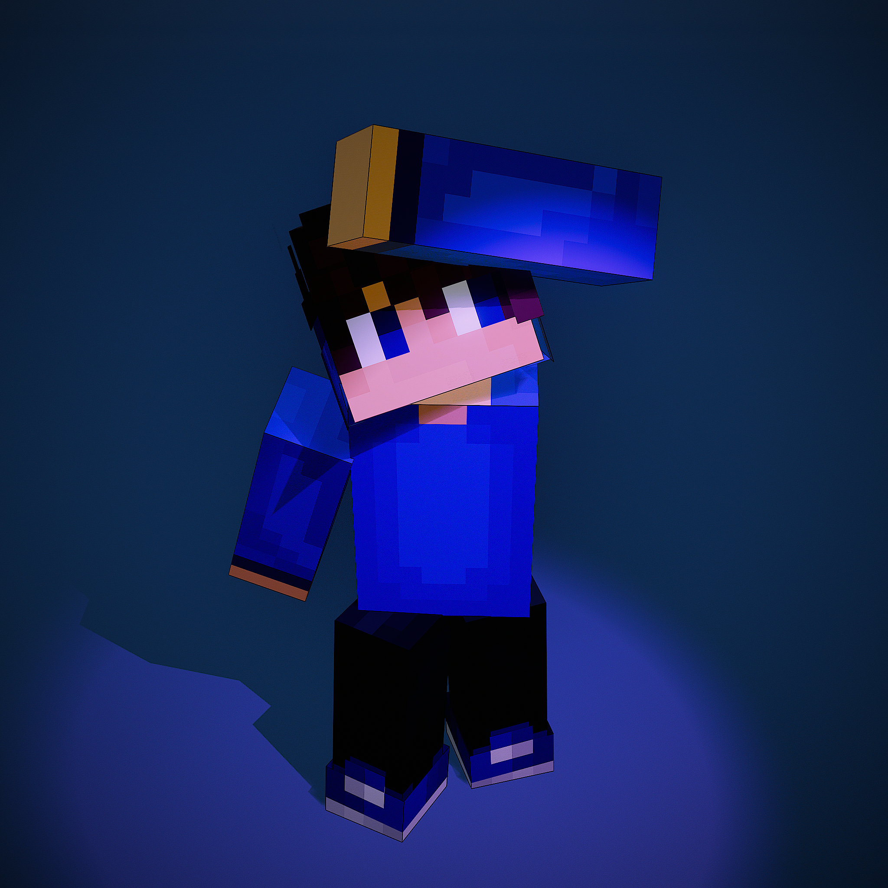
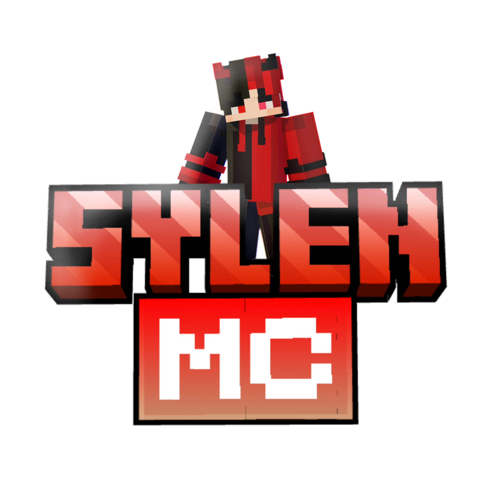
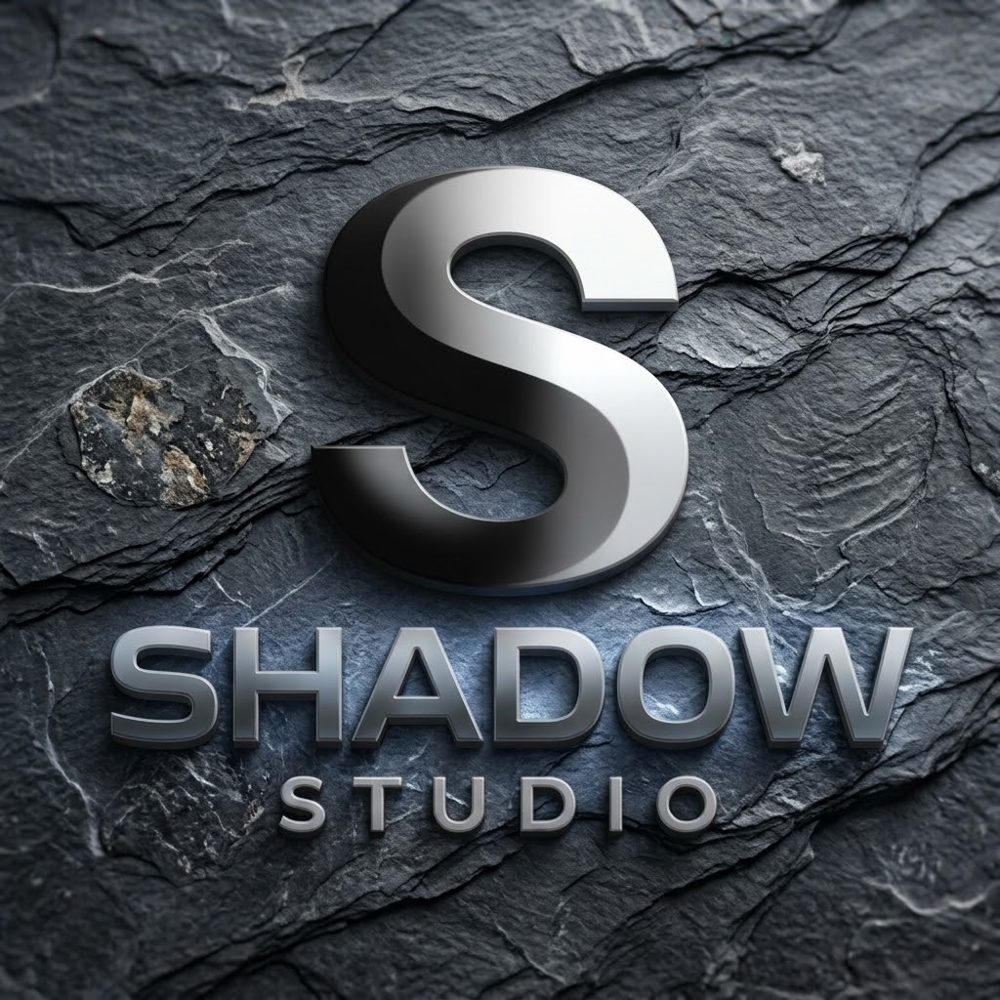

Desarrollador Web de nivel avanzado, configurador y developer de servidores de Minecraft, creador de comunidades en Discord y desarrollador de bots en Node.js.
Apasionado por construir proyectos funcionales, estéticos y estables. Combino desarrollo web, configuración de servidores de Minecraft y administración de comunidades en Discord con enfoque práctico y compromiso real.
Si necesitas una página web, un bot de Discord o configurar tu servidor de Minecraft o Discord, escríbeme: me adapto a lo que necesites, negociamos un precio justo o gratis según tu proyecto.

Diseño y programación de sitios web modernos, responsivos y optimizados. Creación de portafolios, landing pages y tiendas online con interfaces atractivas y código limpio.
Configuración integral de servidores Java & Bedrock (Crossplay), optimización de rendimiento, sistemas de rangos, economías, y estructuración profesional de servidores de Discord con seguridad avanzada.
Desarrollo de bots personalizados a medida para automatizar comunidades. Implementación de comandos de moderación, sistemas de bienvenida, logs y utilidades básicas en crecimiento continuo.
He trabajado en más de 20 proyectos entre servidores, estudios y comunidades, y sigo con toda la disposición y energía para sumarme a nuevos proyectos y retos.

Owner & FounderFundador y desarrollador principal de SylenMC. Encargado de toda la infraestructura técnica del servidor, configuración de modalidades, soporte Crossplay (Java/Bedrock), tienda web oficial y gestión completa de la comunidad en Discord.
Visitar Web Oficial
OwnerEstudio enfocado en Minecraft, desarrollo de proyectos web y configuración de plugins para ofrecer soluciones prácticas, estéticas y funcionales a servidores y comunidades.
Bot de Discord actualmente en desarrollo. Diseñado para apoyar la gestión y automatización de comunidades con comandos, eventos y funciones en constante construcción.
Estoy disponible para proyectos. Si necesitas una página web, un bot de Discord o configurar tu servidor de Minecraft o Discord, contáctame: podemos negociar un precio justo o gratis según tu proyecto.